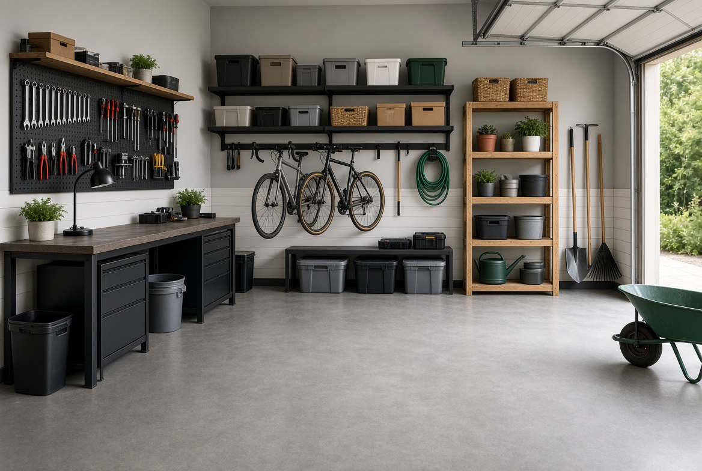

En este artículo
Introducción
Guía práctica para organizar una cocina pequeña, aprovechar armarios y paredes, liberar superficies y mantener un sistema cómodo en el día a día.
La falta de espacio no siempre se resuelve añadiendo muebles. Muchas veces el cambio más importante consiste en reducir duplicados, acercar cada categoría a la tarea correspondiente y aprovechar la altura sin bloquear recorridos ni accesos técnicos.
En esta guía encontrarás un proceso completo para revisar, clasificar, almacenar y mantener el espacio. La prioridad es que el resultado sea seguro, fácil de utilizar y sostenible en el tiempo, no únicamente que se vea ordenado durante un día.
Antes de perforar paredes, modificar instalaciones o colocar cargas elevadas, comprueba el tipo de soporte, las instrucciones del fabricante y las condiciones de seguridad. Cuando exista duda sobre electricidad, estructura o equipos, recurre a un profesional cualificado.
Analiza lo que tienes antes de reorganizar
Una cocina pequeña puede funcionar muy bien cuando cada objeto tiene una razón para estar allí. Antes de comprar organizadores, vacía un armario o cajón cada vez y revisa alimentos, utensilios, vajilla y pequeños electrodomésticos. Esta revisión permite distinguir entre falta real de espacio y acumulación de objetos que apenas se utilizan.
Empieza por retirar productos caducados, recipientes sin tapa, utensilios duplicados y aparatos que llevan mucho tiempo sin usarse. No necesitas deshacerte de algo útil solo porque la cocina sea pequeña, pero sí conviene preguntarte si el espacio que ocupa corresponde a la frecuencia con que lo utilizas.
Clasifica por función: cocinar, preparar alimentos, desayunar, almacenar, limpiar y servir. Las categorías amplias son más fáciles de mantener que decenas de subdivisiones. Cuando sabes cuánto volumen ocupa cada grupo, puedes asignar el lugar más lógico sin improvisar.
Mide los armarios antes de comprar estantes adicionales, cestas o separadores. Anota ancho, profundidad y altura útil, teniendo en cuenta bisagras y tuberías. Un organizador demasiado grande puede desperdiciar más espacio del que pretende ahorrar.
Revisa también los alimentos de despensa. Agrupar pasta, arroz, conservas, desayuno y aperitivos facilita ver existencias y evita comprar duplicados. Coloca delante lo que caduca antes y utiliza primero los envases abiertos.
Los electrodomésticos pequeños merecen una evaluación especial. Si utilizas una cafetera todos los días, puede permanecer accesible; una máquina que se usa una vez al mes puede guardarse. Mantener todas las máquinas sobre la encimera reduce superficie de preparación.
Antes de reorganizar, limpia estantes y cajones. Empezar con una base limpia permite detectar humedad, grasa o piezas deterioradas y evita volver a guardar objetos sobre suciedad acumulada.
Consejos para aplicar esta primera revisión
Aplica esta parte de la organización de manera gradual y comprueba que cada decisión simplifique el uso cotidiano. Si una solución añade pasos, bloquea un acceso o exige más mantenimiento del que puedes asumir, conviene modificarla antes de continuar.
Organiza la cocina por zonas de uso
Organizar por zonas reduce movimientos innecesarios. Cerca de la placa conviene guardar ollas, sartenes, espátulas y condimentos de uso frecuente. Cerca del área de preparación pueden ir cuchillos, tablas y recipientes. La vajilla funciona mejor próxima al lavavajillas o al lugar donde se seca.
Los objetos diarios deben ocupar las zonas más accesibles, aproximadamente entre la cintura y los ojos. Los artículos de temporada o uso ocasional pueden ir en estantes altos. Evita colocar objetos pesados sobre la cabeza si existe riesgo al bajarlos.
La zona de desayuno puede reunir café, té, tazas y algunos alimentos habituales. Esta pequeña estación evita abrir varios armarios cada mañana. No necesita ocupar una encimera completa: un estante o una sección de armario puede ser suficiente.
En la zona de limpieza, guarda productos separados de alimentos. Sigue las indicaciones de seguridad y mantenlos fuera del alcance de niños y mascotas. Si el fregadero tiene poco espacio inferior por las tuberías, utiliza cestas que se adapten a los laterales.
La nevera también se beneficia de zonas. Reserva un espacio visible para alimentos que deben consumirse pronto y revisa antes de comprar. No llenarla en exceso mejora la circulación del aire y permite ver lo que realmente tienes.
Si varias personas utilizan la cocina, el sistema debe ser comprensible para todas. Colocar platos, vasos y cubiertos en lugares intuitivos reduce preguntas y hace más probable que cada objeto vuelva a su sitio.
Una buena distribución no busca una fotografía perfecta, sino reducir pasos. Si cada vez que cocinas debes mover cinco cosas para acceder a una olla, esa ubicación necesita cambiar aunque visualmente parezca ordenada.
Cómo adaptar esta organización a tu espacio
Aplica esta parte de la organización de manera gradual y comprueba que cada decisión simplifique el uso cotidiano. Si una solución añade pasos, bloquea un acceso o exige más mantenimiento del que puedes asumir, conviene modificarla antes de continuar.
Aprovecha armarios, cajones y espacio vertical
Los estantes regulables permiten adaptar la altura a platos, vasos y recipientes. Cuando existe mucho espacio vacío sobre una pila de platos, añadir una balda intermedia puede duplicar la capacidad sin ampliar el mueble.
Los cajones profundos funcionan bien para ollas si soportan el peso. Los separadores ayudan con cubiertos y utensilios pequeños, pero evita crear compartimentos tan específicos que dejen de servir cuando cambien tus necesidades.
Las puertas interiores de algunos armarios pueden admitir organizadores ligeros para tapas, paños o pequeños accesorios. Comprueba que no choquen con los estantes y que las bisagras soporten la carga.
Las paredes pueden utilizarse con barras, ganchos o estantes, siempre con fijaciones adecuadas. Colgar utensilios frecuentes libera cajones, pero no conviertas cada pared en almacenamiento: demasiados objetos visibles aumentan ruido visual y acumulan grasa.
Las esquinas necesitan soluciones simples. Un plato giratorio puede facilitar acceso a condimentos o frascos, mientras bandejas extraíbles pueden ayudar en armarios profundos. Mide antes de comprar y evita mecanismos que resten demasiado volumen útil.
Los recipientes apilables funcionan mejor cuando realmente utilizas sus tamaños. Mantén tapas juntas o en un separador vertical. Si una colección de recipientes ocupa un armario entero, revisa piezas deformadas y conjuntos incompletos.
En despensas pequeñas, cajas por categoría permiten sacar un grupo completo. Etiquetas discretas ayudan a que todos mantengan el sistema. Deja algo de espacio libre para compras nuevas en lugar de comprimir cada centímetro.
Seguridad y aprovechamiento práctico
Aplica esta parte de la organización de manera gradual y comprueba que cada decisión simplifique el uso cotidiano. Si una solución añade pasos, bloquea un acceso o exige más mantenimiento del que puedes asumir, conviene modificarla antes de continuar.
Libera las superficies y crea una rutina de mantenimiento
Una encimera despejada facilita cocinar y limpiar. Mantén visibles únicamente los objetos de uso diario. El resto debe tener un lugar dentro de armarios o estantes. Una superficie libre también hace que una cocina pequeña se sienta visualmente más amplia.
Después de cada comida, dedica unos minutos a devolver ingredientes, lavar o cargar vajilla y limpiar la zona de preparación. Esta rutina evita que pequeñas tareas se conviertan en una limpieza larga al final de la semana.
Una bandeja puede agrupar aceite, sal y condimentos que utilizas a diario. Al limpiar, puedes moverlos de una sola vez. Si la bandeja empieza a llenarse con objetos sin relación, revisa la categoría.
El fregadero no debería convertirse en almacenamiento permanente. Guarda esponjas y detergente en un soporte que pueda secarse. La humedad constante favorece olores y dificulta mantener la zona higiénica.
Una vez por semana, revisa nevera y fruta, limpia pequeños derrames y comprueba qué alimentos deben consumirse. Esta práctica reduce desperdicio y mantiene espacio disponible.
Una vez al mes, revisa un cajón o armario. No hace falta reorganizar toda la cocina de nuevo. El mantenimiento por pequeñas zonas conserva el sistema con menos esfuerzo.
Si una categoría vuelve a desordenarse continuamente, cambia la solución. Quizá el lugar esté demasiado lejos, el recipiente sea pequeño o haya demasiados objetos. Un sistema funcional se adapta a la vida real.
Cómo mantener el resultado a largo plazo
Aplica esta parte de la organización de manera gradual y comprueba que cada decisión simplifique el uso cotidiano. Si una solución añade pasos, bloquea un acceso o exige más mantenimiento del que puedes asumir, conviene modificarla antes de continuar.
Cómo conservar la organización con el paso del tiempo
Antes de dar por terminado el proceso, conviene probar el nuevo sistema durante varios días. La organización real se demuestra cuando puedes realizar las tareas habituales sin tener que mover objetos innecesariamente, buscar durante minutos o dejar cosas fuera porque guardarlas resulta incómodo.

También es útil tomar una fotografía del espacio ya organizado. No se trata de perseguir una apariencia perfecta, sino de disponer de una referencia que permita detectar qué categorías empiezan a crecer o qué zonas dejan de funcionar con el paso del tiempo.
Cuando compres un nuevo objeto relacionado con este espacio, decide dónde se guardará antes de incorporarlo. Esta sencilla regla evita que las mejoras desaparezcan por acumulación y obliga a revisar si realmente existe capacidad disponible.
Los sistemas más duraderos suelen utilizar menos recipientes y categorías más claras. Una caja grande bien definida puede funcionar mejor que cinco organizadores pequeños si todos contienen objetos que se usan juntos.
Si varias personas utilizan el espacio, explica la lógica de la organización y escucha qué resulta incómodo para ellas. Un sistema que solo entiende quien lo creó tendrá más probabilidades de desordenarse.
Por último, reserva una revisión breve cada cambio de estación o cada pocos meses. Retirar objetos que dejaron de ser útiles y ajustar la distribución cuesta mucho menos que esperar hasta que el espacio vuelva a saturarse por completo.
Detalles que hacen una cocina pequeña más práctica
Las tapas de ollas suelen consumir mucho espacio cuando se guardan horizontalmente. Un separador vertical permite verlas y sacar una sin mover todas. Comprueba que el soporte no fuerce los pomos y que quede estable al abrir el cajón o armario.
Las especias funcionan mejor cuando puedes leer sus etiquetas. Un cajón poco profundo, una balda escalonada o un organizador giratorio pueden ayudar. Evita almacenarlas junto a fuentes intensas de calor o humedad y revisa periódicamente aromas y fechas.
Las tablas de cortar pueden almacenarse verticalmente junto a bandejas. Esta posición ocupa menos superficie y permite secarlas mejor antes de guardar. No apiles tablas húmedas porque pueden retener agua y olores.
Si utilizas bolsas reutilizables, dóblalas dentro de una sola bolsa o caja. Establece un límite físico: cuando el recipiente está lleno, revisa las que están rotas o sobran. Esta regla evita que ocupen un cajón completo.
En cocinas compartidas, reserva un pequeño espacio para cada persona cuando existan alimentos o utensilios individuales. El resto debe organizarse por función común. Esto reduce duplicados y facilita que todos entiendan dónde guardar.
La basura y el reciclaje necesitan una ubicación cómoda, pero no deben bloquear el fregadero ni la circulación. Si utilizas varios recipientes, etiqueta según las normas locales y limpia con frecuencia para evitar olores.
Por último, revisa la iluminación de las zonas de trabajo. Una cocina organizada sigue siendo incómoda si no puedes ver bien al cortar o cocinar. La iluminación bajo armarios puede complementar la luz general cuando sea necesaria y debe instalarse de forma segura.
Preguntas frecuentes
¿Cómo empezar a organizar una cocina pequeña?
Empieza revisando una zona cada vez, elimina duplicados y clasifica por función antes de comprar organizadores.
¿Qué debe quedar sobre la encimera?
Solo objetos de uso diario que realmente necesiten acceso inmediato; el resto conviene guardarlo.
¿Cómo aprovechar armarios altos?
Reserva las zonas altas para artículos ligeros y de uso ocasional, utilizando cajas etiquetadas.
¿Cómo organizar una despensa pequeña?
Agrupa alimentos por categoría, coloca delante lo que caduca antes y deja margen para nuevas compras.
¿Qué hago si vuelve a desordenarse?
Identifica qué categoría falla y cambia su ubicación o capacidad en lugar de reorganizar todo.
Conclusión
Cómo organizar una cocina pequeña y aprovechar mejor cada espacio requiere observar cómo utilizas realmente el espacio y construir el sistema alrededor de esas rutinas.
Empieza por reducir lo innecesario, después asigna zonas y solo entonces añade soportes, cajas o muebles cuando resuelvan una necesidad concreta.
La seguridad debe mantenerse por encima de la capacidad de almacenamiento: accesos, ventilación, equipos y productos potencialmente peligrosos necesitan ubicaciones correctas.
Con revisiones breves y constantes, el espacio puede seguir funcionando sin tener que repetir una reorganización completa cada pocos meses.